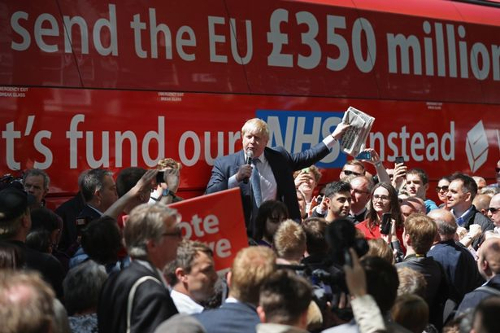

The Treaty of Losers
Part of our failed membership of the European Union involved being in the ‘outer countries’.
Whenever a European Union politician wanted to dismiss the UK’s input from a decision, it would always bring up that it is not one of the “Inner Six” who are the ones who should have the final say. What is common about the Inner Six is that they were either all Axis countries or surrendered at the first major German offensive. They are really the “Inner Losers” of World War II.
| Country | Date of Surrender to Axis |
|---|---|
| Germany | Axis |
| Italy | Axis |
| Luxembourg | 10 May 1940 |
| Netherlands | 14 May 1940 |
| Belgium | 28 May 1940 |
| France | 22 June 1940 |
These are the countries that wrote the Treaty of Rome.
Here are the signatures:

And here they are, the signatories, signing the above treaty. Look how diverse are the signatories and the observers.

Who are these identical clone-like guys that get to represent their countries, are they some kind of war heroes? Sadly not, with a couple of exceptions, they managed to quietly shirk out of World War II despite being of fighting age. The war barely interrupted their wining and dining.
| Signatory | Role in World War II |
|---|---|
| Paul-Henri Spaak | Fled to London |
| Jean-Charles Snoy et d’Oppuers | Labour Volunteer in Belgium |
| Konrad Adenauer | In hiding (in his friends’ mansions) |
| Walter Hallstein | Nazi officer (artillery), got captured by Allies, Prisoner of War |
| Christian Pineau | French Resistance, got captured in 1943, rest of war in prison camp |
| Maurice Faure | Professor, joins resistance in 1944 (after Allies already winning) |
| Antonio Segni | Local government politician in Sardinia |
| Gaetano Martino | University lecturer |
| Joseph Bech | Fled to London |
| Lambert Schaus | Town Councillor, arrested in 1941, built motorways for rest of war |
| Joseph Luns | Got a post at the Dutch embassy in London |
| Johannes Linthorst Homan | Chairman of the Dutch Olympic Committee |
In this signing ceremony, they are meeting on the Capitoline Hill, the very centre of the Roman Empire. This symbolism is not to be ignored. They specifically chose to wrap this new Union in the symbolism of the previous attempts to unite the peoples of Europe ( see Rome Vs the Matrix for a lot more on this topic).
This treaty of signed by War dodgers of the Axis countries that just lost World War II, yet in their head they Roman emperors.
Union of Europeans
The EU traces its origin to this Treaty of Rome, the first line is:
DETERMINED to lay the foundations of an ever-closer union among the peoples of Europe,
On that same first page, we have a resolution “to eliminate the barriers which divide Europe” and to ensure “harmonious development” by “reducing the differences existing between the various regions”. It goes on in much the same way for 80 pages.
The implication of it all is that Europeans are a single people accidentally separated by borders and they should fix it with an ever closer union.
In my post Rome Vs the Matrix, I talked about how from Roman times until today, they have been trying to reunite Continental Europe.
The most immediate pre-brexit example is of course Hitler’s attempt to unify Europe in a Nazi Empire which I talked about in the post Godwin part two.
In short, the all white master race lost to the multi-racial armies of the Allies.
Both the Nazi empire and the EU follow an atheistic secular scientific approach, with religion and Christian culture pushed deep out of public life.
Most importantly they both use Roman era symbolism for their ends. The EU is a Union of White majority countries, with a customs union of external tariffs seeking to partially insulate the European economies from the rest of the world.
If you are from Bulgaria or Finland, you have freedom of movement to work and live into the UK, but if you are from Kenya or India, you do not. The former countries are white European countries, the latter are not. I am not the only one who spotted this.
Mein Kampf is written by a deranged socialist artist who became a dictator. The treaty of Rome is written by lawyers. However, they both have this concept of a United European people, both times they have a white majority, how convenient.
The deep pool of racism that led the Axis populations to condone Hitler didn’t magically disappear when the allied soldiers rolled in.
This concept of a unified European people is the middle-class educated lawyer’s version of a master race. Once you understand this, all the white supremacist euphemisms used knowingly and unknowingly by Europhiles become clear.
For myself, I don’t believe in this concept of a special united European people. I think someone from South Africa or Pakistan is equal to someone from Finland or Slovakia. We should work with everyone and not put up barriers to the 84% of humanity that are not in the EU, we should be equally open to everyone.
Godwin part two

I had meant to write a sequel to my 2007 post on Godwin’s law. Over, ten years later, here I am.
The book Mein Kampf is the demented ravings of Hitler. It comes in two parts. The first volume is an autobiography and the second is his manifesto of National Socialism and his plan for a “new order”, which later he had an opportunity to try out.
Hitler’s philosophy was socialist in that he aimed to abolish individualism. He believed this process should begin from birth, and children should be educated in a system of total control, that minimises parental influence in favour of the ideas of the Nazi state.
The book also spends time explaining Hitler’s atheism, and his desire to remove Christianity from all public society. Obviously I don’t need to explain his views toward Jews. Hitler believed in pre-Christian neo-pagan style beliefs with his famous vegetarianism. He believed the pre-Christian Roman Era under Julius Caesar and Emperor Augustus was the high point of humanity.
Hitler believed in allying with certain Christian groups if it suited his strive for power, at least until after he had created his empire then he could totally abolish it.
For Hitler, Christianity is a Jewish plot to keep Europeans from understanding their true ancient “Aryan identity”, their natural superiority from being white and more highly evolved. Everyone else, including Slavic peoples, were Untermensch, subhumans.
Albert Speer, quoted Hitler in his book Inside the Third Reich:
“You see, it’s been our misfortune to have the wrong religion. Why didn’t we have the religion of the Japanese, who regard sacrifice for the fatherland as the highest good? The Mohammedan religion too would have been much more compatible to us than Christianity. Why did it have to be Christianity with its meekness and flabbiness?”
Instead of a heavenly Kingdom, Hitler believed it was his destiny to create a united Europe with himself at the centre. A new Roman Empire, with himself as Emperor. An Empire without meat, smoking or alcohol.
When George Orwell reviewed the book for a magazine, he called Hilter’s vision of a united Europe: “a horrible brainless empire”.
His atheistic secular scientific approach did mean he spent an enormous sum on Universities and research and development. Which is why at the end of World War 2, the allies raced with each other to grab all the Nazi scientists.
However, Nazi Germany couldn’t get many of their innovations into production in time to help prevent the total loss to the Allies. As it turned out, this master race of white Europeans wasn’t as good as it thought it was.
As I talked about in the previous posts, it is important not to forget how diverse the Allied armies were. The white European master race lost to the mixed multi-racial British Empire army, the segregated multi-racial American army and the Slavic Soviet army.
People are just people. There is no white superiority, if there was Hitler would have won the Second World War. There is no need to repeat the monstrous experiment.
How socialist National Socialism actually was is one of those issues to be debated forever.
The ambition to abolish Christianity is always the hallmark of authoritarianism, likewise the desire for the state to indoctrinate children instead of letting parents teach children their own ideas.
More superficially, whenever a vegetarian or teetotaler imposes their policy on the majority, I think of Hitler’s plan for his eventual joyless Empire.
The World According to Clinton’s Email

Wikileaks has once again come up with some fantastic insights into how the elite run the world. Reading the different leaks from people associated with Hillary Clinton is fascinating. We are really getting a deep view into the globalist mindset.
The emails showing what Hillary was promising to her wall street donors are particularly enlightening.
If her actions and choices seem incomprehensible, you have understand that Clinton and her friends have a very different view of the world than us normal people. Especially those of us who hold to romantic ideas like God and country and loving your neighbours as yourself.
As always, click to enlarge the images.
Different crib

If you think that Hillary’s best known house, the house in Chappaqua, is pretty reserved and tasteful for the elite, it is, but you have to remember that this is not a ranch in the middle of the Texan desert, it is at the end of a private road in the suburbs of New York City. It is a mega-great house.

The house is surrounded by a large white wall, and a manned guardhouse stands by the entrance to the property. Yes, the anti-wall Clinton likes her own walls very much.
The red barn at the back is not for chickens, it is where her household staff and armed security are hidden away.
Meanwhile a small fleet of armoured vehicles provide suitable transport for any occasion.

Different services

In 2016 figures, the per capita disposable income of an American citizen is $39,190. Chelsea Clinton went to a school where tuition and fees cost $48,160 in 2016/2017. And yes, it has a massive green campus with a giant fence around it. The school campus makes Clinton’s house look like a hovel.
If Hillary doesn’t care about what provision is needed to handle mass immigration to inner cities, it is partly because she doesn’t need to use the overwhelmed schools or local services herself.
If Hillary seems a bit disrespectful towards the police, it is because she doesn’t need them, she has her own armed guards.
We can go on like this forever, so lets zoom out a bit.
Different Map
Almost every country has at least one thing to be proud of. As the British people, we are proud of our hard won freedoms and the communal institutions that our ancestors left us such as the NHS, our Royal Navy, our Royal family, our state school system, our ancient churches, castles, national parks and so on.
This means nothing to Hillary and their tribe, they are globalists because they are so rich they don’t want or need a nation state to look after them. From the first class cabin and the private jet, every country looks the same, the same hotel chains, the same exclusive shops, etc. The rich already live in a generic border free world.
If we draw a map of world according to Hillary’s email, it will look like this (map credit to Wikipedia, click on the map below to enlarge):
{kind=link}

How to run the world
The power structures of the globalist world view are really interesting but also quite basic. There are four levers they have to control the world. I will explain this using the above map.
- Trade policy
To Hillary and her ilk, California is the capital of the world, eventually drawing all of the Americas into a “greater California”.
By combining this Reino de Clintoñia with its two major colonies of Eurabia and Pacifica, we have a giant and generic service economy, ready to serve the elite’s every desire.
All the trade agreements like TTIP, TPP and the EU are there to make sure the servants do not become too uppity and to remove any barriers to the maximisation of profits for Goldman Sachs bankers and the others who fund Clinton and her friends.
- Patronage
As well as unifying the legal and trade systems, patronage is used to keep potentially dangerous alternate power structures such as intellectuals, religion and the media on board. Internal ‘markets’ and competition for grants keep the universities, NGOs and charities as useful idiots spreading the globalist gospel.
It is important to create pseudo-scientific pretences of why this globalist neo-feudal system benefits the population more generally, as opposed to more Occam’s razor like solutions such as lets take the rich’s wealth away and use it to cure cancer.
This is also why the current move towards cultural Marxism and identity politics suits the elite so well. David Cameron and the American democrat/republican one party state are happy to hand out gay marriage because it doesn’t cost them any money. Here have all the pronouns you want, just don’t ask for decent housing for the poor, infrastructure or services.
- Consumer goods and entertainment
2000 years ago, the Roman writer Juvenal coined the phrase ‘panem et circenses’ (bread and circuses) to explain how the elite kept the masses under control.
The classical theory of why the Roman empire fell includes the observation that through insecurity of trade routes and inflation, Rome stopped being able to provide affordable consumer goods to the people.
The global leaders today do not make the same mistake, they keep their servant class in check by exploiting the poor of the world. They keep Chinese goods cheap, and if the Chinese get sick of making plastic crap for the world, they keep plenty of other Asian countries poor as a backup, after that there is Africa, which is currently just used as a giant shop of minerals to be exploited.
[I have talked a lot lately in this blog about how Africa bears the brunt of the current system of world trade, so I don’t want to sound like a broken record, needless to say, every trade deal they make always includes massive tariffs against Sub-Saharan African countries.]
Meanwhile, we are in an entertainment golden age, no end of TV shows, films and sports are provided to keep the minds of the servants busy. While there is an attempt to reclaim costs to pay the cast and crew and so on, unauthorised distribution of media is rampant and tolerated as only thing worse than the people watching unauthorised TV is the people not watching it.
If the mainstream media is rejected by the people, then a major form of control is lost, thus the mad dash to control and censor the Web.
- Useful enemy
Whenever Clinton and other Western politicians get into trouble, Russia and a few other useful enemies are wheeled out as a useful excuse for pretty much anything.
There is a Goldilocks zone for useful enemies, not too big and not too small, Putin was getting too big for his boots so sanctions were used to make Russia’s GDP smaller than Australia, meanwhile Iran was on the verge of total collapse so Obama and Clinton recently removed its sanctions and bailed out the regime with billions of dollars.
Another way
We are finally at a level of technology where we can in our lifetimes, foresee a future free of disease, want or waste, where robots do the work and people are free.
After the Attack on Pearl Harbor, when FDR decided to pursue a war across two oceans, the US had no ability to fight a major foreign war on one front, let alone two. Yet he pulled everyone together, rich and poor, black and white, and together they got the job done.
Setting a national goal and putting the resources of the whole society into it can achieve massive things:
“I believe that this Nation should commit itself to achieving the goal, before this decade is out, of landing a man on the moon and returning him safely to earth.”
When JFK said the above quote, they had a general idea of the physical principles but no practical clue how to achieve it. We now know far more about cancer and other diseases than we knew about the moon in 1961.
I want a leader that says we will commit ourselves to curing cancer in ten years, to curing type 1 diabetes, to ending asthma in children.
I want a leader that says we are going to digitise our cars so that in five years time, the number of child deaths on the road is 0.
I want a leader that says we will build a house for every person who needs one, even if we have to take away a little land from wealthy estates.
What is not important

The whole reality TV side of things I don’t really care about. I don’t care if Jeremy Corbyn doesn’t wear a tie or Boris Johnson has made inappropriate jokes about foreign dictators. I don’t care if Labour MPs feel unhappy with Corbyn’s management style or Theresa May is alienating the 48% (which is now more like the 13% according to the latest polling but lets not get off track).
I do think it is somewhat odd that almost all of the Labour shadow cabinet come from London while almost all of the Tory Cabinet come from the home counties, but if they were the best people they could get, then I guess I don’t care.
I don’t care if Trump said something sexist 20 years ago, I don’t care if he makes his staff lose weight, I don’t care what he did when we was a billionaire playboy and a businessman.
I don’t care that the Clintons have a weird open marriage where, to use Hillary’s own terminology, she has to herd around Bill’s discarded ‘bimbos’. I don’t care how much Hillary swears in her emails. I don’t care she called her own party “a bucket of losers.” I don’t care if she coughs constantly for 8 years in a row.
I don’t care about temperament, I don’t care about who is the best manager. I don’t care who is the best husband or wife or mother or father.
I just want them to put these lilliputian tabloid issues aside and have some real policies to do something worthwhile for the actual voters.
Champions not tokens
The lives of the elite and the normal people are divided as never before. However, we don’t need leaders who feign the common touch. We don’t want token leaders, we want champions of the people.
Churchill was born into vast wealth, he was a drunk who gambled away the wealth of two great families and said many outrageous and sexist things, he would have probably been called deplorable and irredeemable by Hillary Clinton.
However, Churchill put all his privileged background and personal contacts into one aim, being the best military leader he could be.
When the time came that Britain was in the existential crisis of World War II, Churchill, being friends or related to much of the elite, knew exactly where their money was. The rich did not get off easy in cash terms and many of the Lordly estates were broken up. According to the national archives:
“a total of 14.5 million acres of land, 25 million square feet of industrial and storage premises and 113,350 holdings of non-industrial premises were requisitioned by the State.”
If we can raid the rich to defeat Hitler, can’t we raid them again to defeat cancer?
Stylish Super Skulk

The last time I talked about the web browser, I was technically speaking about Iceweasel. For the last decade, Linux users like me have known the default browser that Debian ships under the name of Iceweasel.
In 2006, due to some hysteria over trademark protection and typical West Coast America “we know better than you” attitude, Mozilla told Debian it could not use the name Firefox or the Firefox logo.
Can we even use it here? Well since we don’t want to be told off by Mozilla’s logo police, we can use images of some beautiful people who have made their own dramatic and artistic costume interpretations of the logo. This blog is 90% about cool and silly pictures after all.
After 10 years of Debian using the name Iceweasel and its own logo, eventually, Mozilla gave up and asked Debian to use the normal name and logo. Lets celebrate with another costume:

Thanks Iceweasel for your service, we will miss you. LWM published a longer discussion of this change. Incidentally, Google’s Browser is still called Chromium instead of Chrome on the Debian Linux platform. I could only find one Chrome costume:

He (or she) looks pretty happy.
Meanwhile, this week Firefox 48 has been released which, among other things, has caught up with a feature that Chromium has had for a while, namely multiple processes.
Making the browser render web content or play media in a subprocess is obviously a win for security and performance, especially on Liunx.
Processes are the main native form of efficient resource allocation on Linux, so now Firefox is using multiple processes it is finally working with the grain rather against it.
It is still early days. Nothing has crashed for me yet, but I am keeping the Firefox that Debian distributes (which at time of writing is version 45), around just in case. You might want to consider doing the same, especially if you are using extensions which may not work in the multiprocess mode yet.
To try it out, download Firefox. By the way in my last post about Firefox, I talked about how to run multiple Versions of Firefox and how to create an extra profile, which might be handy.
Firefox is pretty cautious about turning multiprocess mode on but putting about:status into the browser will tell you if it is on or off. As in the image below:

If you find it is off, you can make a new profile (as I just mentioned) or you can open about:config and toggle the setting called browser.tabs.remote.autostart to true. Then you can go back to about:status and see if it worked.
It still might be off because of whatever reason, i.e. they it might break an extension or whatever. If you want to push on anyway then you have to open about:config again and make a new boolean setting called browser.tabs.remote.force-enable and set that to true. Find more instructions here.
So well done to all the Mozilla developers and volunteers who wrote and shipped that. Just for you, another of those great Firefox costumes:

Time to put away the student politics

Those who resort to violence, always lose their claim
After the 18th and 19th centuries, there were many competing territorial claims over former Prussia; Germany had some valid and some not so valid claims, as did other countries. Going to war (twice) over the claims was not valid however.
It is a long standing and basic principle of world order that the belligerent aggressor loses whatever claims they had. Now of course Germany is a peaceful and wonderful country and also makes no claim to any of these areas.

Whatever the right or wrongs of the Falklands issue were before 1982, once Argentina invaded and spilt British blood, they lost any claim to the islands; it is just how it goes.

It is also an issue of basic democracy that as recently as 2013, the Falkland Islanders had a referendum with a turnout of 91.94%, where 99.8% voted not to change the Islands’ status in anyway. The results of referendums must be respected, especially with such a high turnout.

There is also the practical matter that saying anything different will be a sure loser in British election.

Likewise, the question of whether making the state of Israel was the correct response to the evil of the holocaust, became a non-issue after 1967. Israel did not start the war, the Arabs did, but the Israelis won the war and the issue was settled.
Any claims the Arabs had over the land was lost then. You don’t get to claim territory through starting wars, you must only lose by starting wars.
Time to boycott calling for boycotts
Even if you disagree with Israel’s policies, collective punishment against its citizens can have no practical effect on those policies.

Dis-inviting an innocent academic from a conference, will not change policy. A professor of Artificial Intelligence or Manuscript Studies (made up examples for the sake of argument) does not set Israeli security or foreign policy.
If a UK institution chose an Israeli company to provide a product, it did so based on price and quality. Pressuring an institution to boycott the Israeli company will just make innocent workers there poorer and will mean the UK institution will get a higher priced and/or lower quality good. An orange juice producer or a software company does not set Israeli security or foreign policy.

The same principle applies to exports. Pressuring a UK company to not sell products to Israel, tractors for example, will not change a single Israeli policy. It will just mean they buy a tractor from someone else and workers in the UK have less jobs making tractors.

Discretion is the better part of valour

The sad truth is that there is nothing the UK can usefully do to make peace in the middle east. Tony Blair of all people tried to be a peace envoy and yet there is still no peace.
Any politicians that want to pander to either Muslim or Jewish voters by taking a side are just being dishonest with the voters. The UK just has no leverage on either side. The Middle East is just not a part of the world that cares what Britain thinks one way or the other.
Our winning strategy as a country is not to pick sides and just be a friend to everyone, and of course, sell them all our goods and services.
By the way, America has far more clout, expertise and money and still has not made much progress either but that is another story.
Yes there are poor and suffering people in the Middle East, but there are poor and suffering people everywhere so we should focus on areas where we are wanted and we can have a meaningful impact, such as African free trade and development which we have ignored for too long.
It is not our fight

So it total baffles me why Palestinian liberation or Latin American politics are cause celebres on the UK left. There are no votes to be won here.
We talked before about the difference between few hundred thousand people in the UK who have strong political views and the millions who just want cake.
The average British voter does not care a monkeys about Palestine or improving Anglo-Argentinean relations and just wants to hear domestic policies.
It seems like Jeremy Corbyn is wise enough to know that there is a difference in being a backbench MP who can obsess about these obscure issues and a potential Prime Minister who needs to have total clarity and focus to cut through a hostile media. I hope so anyway.

Let them eat cake

On the 23rd June 2016, the people of Great Britain and Northern Ireland were asked whether they wanted to leave or remain in the European Union. 52% voted to leave while 48% voted to remain.
On April 10th 2016, ten weeks before the vote, ICM published an opinion poll that gave a four-point lead for Leave (52% vs 48%), which turned out to be the correct result.
One explanation is that with several pollsters covering the referendum, one has to be right; after all, even a stopped clock is correct twice a day.
However, lets consider an alternative explanation, that the whole EU referendum campaign made absolutely no difference to public opinion at all.
Hundreds of millions of pounds spent by the campaigns, posters, Boris’ bus slogan, acres of newspaper columns, billions and trillions of tweets, all of it, didn’t manage to convince anyone of anything.
People are just not that into politics.
In other words, the day to day minutiae of events doesn’t really matter to the silent majority, they haven’t got the time or the inclination to care and why should they? It would be very conceited to say the people should look up and spend their time listening to their Lords and masters.
The print circulation of Britain’s main broadsheet newspapers has fallen so far they can barely scrape a million per day combined. What percentage of their remaining readers do more than browse the news before going straight to the crossword or the sport section?
Meanwhile, less than 200,000 people in the UK watch the BBC’s political programmes, but over 15 million people watch ‘The Great British Bake Off’ on the same network, which is a cake baking competition.
As I said on Twitter: Politics is important. However, cakes are 75 times more important.
In fact, I don’t want to ever live in a country where politics is more important than cake, it doesn’t sound like a very benevolent regime.

Hope Wins over Fear
In the midst of a larger post about the results of the EU referendum, I talked about the echo chamber in the campaign. I want to explore that a tiny bit more.
You also may remember that in a post before the referendum, I talked about myself as an undergraduate and how I was very passionately pro-EU but over time, the doubts set in, especially after the crash in 2008 and the EU’s harsh measures metered out to Greece.
As I started 2016, the doubts and problems with the EU had not yet pushed me into the idea that the UK should ever leave the EU; I started 2016 as a reluctant but firm ‘remanian’.
However, I wanted to make the decision based on all the information and up to date arguments. I turned to other people, both on Twitter and in the real world.
I soon ran into a problem, even discussing my own doubts was beyond the pale with anyone pro-EU, you must support the EU because that is what you do.
On Twitter it was worse, loudly unfollowed by 20-30 people, regularly blocked in the middle of a seemingly civil discussion over a technical EU matter.
I was shocked the first time, saddened the second time, third time it was water off a duck’s back, I stopped noticing or caring when someone threw their toys out of the pram.
I did try to carrying on to discuss with any remainian who wanted to, in the hope they would come up with the magic argument that would put me squarely back in the remain camp. It soon became apparent that everyone else has the same doubts and concerns.
Unlike ten years ago where you could easily encounter British Europhiles who wanted to join the Euro and the Schengen Area and so on, now ardent Europhiles seem a bit thin on the ground.
I met no-one that had a positive view of the EU as a force that will make things better, it was just what you did about the faults, whether you just lived with them in a fatalistic fashion or tried to face up to them by leaving (and potentially making a lot of new issues/opportunities).
A lot of the remain argument was that uneducated and poor people want to leave, so don’t be in that group since they are all racists and bigots. Well I was brought up in very modest circumstances indeed and these are my people and I don’t recognise that description.
Meanwhile, the leavers were just more fun and upbeat people. They were happy to listen, discuss and gently point out their views.
I guess the morals of the story are that if you want to campaign for something, have the most hopeful message. Even if you are against something, have the best plan for fixing or replacing or leaving it behind. Blocking people doesn’t win votes in real elections.
Above all, the moral is Twitter is probably a crap place for discussing politics.
Good fences make good neighbours

The EEC was not very popular when the government took the UK into it in 1973 and so the government was forced by the voters to have its first leaving referendum only two years later in 1975.

The government and all of the media threw the kitchen sink at remain in and succeeded, but on practical grounds alone, it never even tried to sell the vision of an ever closer union to the people of Britain, and if it had, it would have been rejected.
While governments managed to resist another referendum for the next four decades, the practical nature of the remain argument meant there was no mandate for further integration, indeed the remain argument was won precisely on the basis that Britain would not be pulled in any deeper.
So as the EU project developed in different directions, Europe was not something Britain did, Europe was something done to it; something that had to resisted or opted-out of: Schengen Area, the Eurozone and countless other programmes.
The 2016 EU referendum was the the last moment in history that a pro-EU case could be credibly made but again the establishment decided not to make it. It again decided to focus on the perceived practical shortcomings of an independent UK.

In other countries, there are some people who genuinely believe in a United States of Europe. However, we in the UK never had that tradition, so those arguing for remain are those who benefit most from the patronage that results from laundering our own taxes to and from Brussels give.
Brussels is awash with lobbyists for non-European interests and yesterdays winners struggling with technological change, wanting to game the regulations against new interests.
Remain was a coalition between decent people wanting to keep the status quo but also all these aforementioned parasites and spivs who know they could not justify a policy or an item of government spending to the British electorate so abuse the (still not very democratic) EU to sidestep democracy to push their own special interests and regulations.
I said before the referendum that the rationale for entering the EU in 1973 was marginal at best and I concluded the forces moving the UK away from it were increasing.
The neo-liberal/Thacherite consensus of the last 30 years cracked fatally in the 2008 crash, since then it has been on life support as near infinite supplies of money are printed and dished out to the banks, but brain activity has not returned to the patient. The EU referendum is the British people starting to turn the machine off.
To put it another way, as I said on Twitter, it was Chekhov’s referendum. David Cameron put a gun on stage and the people shot him with it.
After the vote, I talked about the call for the second referendum and why it will not work, Brexit has just sped up the inevitable changes.

Anyway Britain is leaving the EU. If you voted for remain, not only will be much happier if you just accept it and move on with your life, you will be more successful. Escaping to a fantasyland where the vote did not happen will mean you miss the opportunities of the future.
This applies to organisations and sections of the economy too, after all no one is owed a living.
Those that work in harmony with the new independent era will thrive, those that mope around re-fighting yesterday’s narrative will be seen as irrelevant in the post-Brexit era and thus will lose funding accordingly.
The leave supporting public has been gracious in victory, trying to bring everyone on board. However, the good mood will not last long if institutions are seen to be working against the UK. David Cameron and George Osborne doubled-down on Remain and their position was untenable in the new era. Those that don’t learn the lesson might suffer the same fate.

I think in the long term, Brexit will be a benefit to all of Europe, Britain has gone from being an unhappy tenant of the EU to Europe’s most supportive neighbour and ally.
If you are a European, we the British people, voted to take by control and run our country from Westminster and our city councils and regional parliaments in the UK. However, we still love you as people and we love your countries. We can still kiss you from over the fence.
Order of Magnitude
The leave side had Boris’s battle bus which had the slogan “We send the EU £350 million a week, let’s fund our NHS instead.”
While it is technically true that the cost of the UK’s soon to be ended EU membership is £350 million per week, we got a rebate (i.e. a discount) of £100 million so we only sent £250 million per week. While it is not stated in the slogan how much exactly extra money could be available for our NHS, it cannot be £350 million per week, since only £250 million per week ever existed (to the extent that money exists).
For me, the question of whether to be in the EU or not was never about money but the slogan would have worked as well with whatever the correct fact-checked figure is.
However, if it was meant to be a trap, it worked. The remain side had far more money and far more establishment figures, and when it constantly sent those figures out to say that the real number is really £250 million per week and some of this is spent on useful things here in the UK etc, it is made leave’s case for it.
For £250 million a week is still a massive number and the same order of magnitude, by focusing on the detail, Remain left the overall premise unchallenged.
Having your opponents make a point for you, frees up your own resources and own airtime for other points.
Not that it matters, as no one was listening. People voted for their own reasons not because of anything Boris said.
This is my design

This is a sequel to the last post about Britain’s relationship with the EU. That ended with the conclusion that “However, we will leave in the end, it is just a matter of time, and we will not be the only ones.”
Little did I know that the people of Britain were already there ahead of me. When the BBC’s coverage started under Britain’s leading presenter, the great David Dimbleby. It seemed that the Remain side was going to cruise home.
I thought, okay a noble fight, we made a point, but the forces of multi-national capitalism were overwhelming. So I went to bed. After all the two campaigns were not equal.
A lop sided campaign

The Remain side had all the forces of multi-national neo-liberal capitalism, the banks, the European Commission as well as implicit support from the supposedly independent Bank of England who popped up occasionally with helpful statistics and reports.
A lot of people do their duty as citizens and vote, but are not really interested in politics. They have enough on their plate with work and family etc. These people were always likely to do what they were told by the political leaders and also are biased towards the status quo.
The British government spent £9 million on posting a Remain booklet to every house in the UK, a benefit that the Leave side did not get. We also had the Prime Minister and the leadership of the other mainstream parties like Labour, SNP and Greens supporting Remain.
The support of the Labour leader Jeremy Corbyn was particularly difficult as the traditional left wing position in Britain is to be against the EU. The 1975 referendum, the No campaign was led by the main Labour figures of the day Michael Foot, Tony Benn and Barbara Castle.

Jeremy Corbyn was a well known eurosceptic but as the leader of the Labour party, whose MPs were mostly elected during the Blair years and thus are mostly right wing, he was in a bit of a difficult situation. So he did his duty as party leader and represented the party line, appearing at events all across the country for Remain.
He did however refuse to make any out and out lies, and so when cornered with a particularly forensic question, the truthful answer was not always the most politically helpful answer for the Remain side.

The mainstream media were very pro-remain at first, especially the publicly owned TV stations like the BBC and Channel 4, but the newspapers started to drift away, even the Guardian started featuring a few pro-leave articles in the last week or so of the campaign.
Moving from one newspaper to another is a matter of moving your hands a few centimetres, so British newspapers do tend to reflect the views of their readers to a certain extent, despite the owners tending to be pro-Remain.
How to get someone out of bed
However, after a few hours of occasionally checking my phone in a sleepy haze. Something was happening. Was I dreaming it?
Area after area went for Leave. London and its little spider legs of wealth around London were going for Remain, as was Scotland, but the rest of England and Wales mostly voted for Leave.
I decided to get back out of bed, go back downstairs and wait for the Birmingham result.
Birmingham is for leave

Britain’s second largest city, Birmingham is not some twee ancient town like the nearby Anglo-Saxon capital of Tamworth (see last post). Birmingham is a child of the industrial revolution and the Empire (also see last post) with the major expansion of the city in the 1800s and early 1900s. Birmingham is a beautiful city, as long as you like Brutalist and Modern architecture.
Birmingham is somewhere between 45% and 50% “White British” (this weird term is the designation the government uses), it isn’t the most diverse city, which is Leicester and some the cities of the North but it is the one I live in and know best.
The different races of Birmingham mostly get on very well, the city’s signature dish is the Balti and the civic institutions put on events that reflect the city’s diverse cultural backgrounds but are open to all.
It is a Labour city. The right wing parties barely make a foothold, there is no UKIP presence to speak of. There are 9 Labour MPs and just one Tory MP in the outer suburb town of Sutton Coldfield, which doesn’t even consider itself part of Birmingham.
Birmingham with its 700,000 registered voters in the main city area, was expected to be a big remain landslide. When the result came it was 50.1% for Leave.
When you go through the posher areas of Birmingham, there were loads of Remain posters on many of the large expensive houses, so it is not mathematically possible or likely that all the votes to Leave were from “White British”. So the Black and Asian voters of Birmingham were split in the same way as the white voters, or at least enough to put Leave over the top.
The question that Remain will never answer

I focused last post on the successful non-EU immigration that the UK has had, and a good proportion of them seem to have gone for Leave, as I thought they would. One of the questions I posed in my last post can be summed up as follows:
Why should a Bulgarian be able to bring their family to the UK and trade freely, but an immigrant from India cannot?
Despite being posed many times by Leave, this question was never answered by the Remain side. Therefore, the Black and Asian vote split and the Leave side benefited from a million or two more votes nationally, which is of course a winning difference.
Why didn’t Remain field an answer? For four reasons I think.
Little Europeans

Firstly, is the ‘little Europeans’ issue I talked about in the last post, the culture of the EU is about middle class White-European people flying about between cities on expenses. Britain has a Commonwealth history making us look at the world, a lot of Europe does not.
Those Britons most in support of Europe tend to have this identity also. The idea that people from outside the EU such as Africans or Indians are equal to Europeans, and therefore the system should reflect that, just doesn’t occur to them while hidden inside the walls of fortress Europe. We might as well be talking Klingon for all the good it does. There is just not the mental framework there to get it.
Remain also just assumed that all non-“White British” were theirs by right and they did not have to work for it. The idea that Asian or Black voters would have independent ideas and issues that should be considered did not seem to be considered by Remain.
Secondly, the Remain side I think made a tactical decision not to answer the question. They thought saying something like immigration is good, we should open our borders to the Commonwealth too, but we are not going to control EU migration at all to compensate, would push more people to the Leave side.
Top down Remain, bottom up Leave

Thirdly, because the Remain side inherited the infrastructure of the Labour and Tory parties, they followed a lot of top-down practices that made sense in a constituency first-past the post based system. So they sought to get a simple majority in each area, rather than focusing on total number of votes. They assumed that most Midland and Northern cities as well as Wales, would overall go for Remain so didn’t put any real effort into those areas.
Meanwhile the Leave campaign, short of financial resources, had to run a grass roots, bottom up campaign. They found out the questions putting people off Leave and had to come up with some kind of answer to the questions.
Meanwhile, several Unions like the RMT, ASLEF and BFAWU; left-wing anti-establishment figures like George Galloway and Julian Assange, as well as the socialist worker and many others, were rallying the non-mainstream media, blogs, and social networks to the Leave side.
How to brainwash yourself

The forth reason is connected to the last part, and the most important issue and this is a wider reason to why Remain lost. They believed their own propaganda, they brainwashed themselves. Believing that there were no valid reasons want Leave apart from to control immigration, they didn’t field any answers to the questions being raised.
Remain just focused on two messages:
Project Fear - leaving the EU would be the end of the world. The Chancellor George Osborne, previously featured on this blog, the one that likes to take money from disabled people and give it as tax breaks to billionaires; he made a much lampooned threat of an emergency budget requiring massive tax rises and spending cuts.
Meanwhile there was the even more preposterous argument that the UK leaving the EU would be the end of peace in Europe. I don’t even know what this means. Are Germany going to restart the blitz and rain down bombs on our heads? Is the UK going to gather an army of longbowmen and retake Agincourt? What a lot of utter nonsense.
Project Sneer - anyone who is for leaving the EU is a racist Nazi who wants to round up immigrants and throw them into the sea. Equally stupid. We will talk about this again shortly.
While immigration was an issue of course, the Leave campaign also focused on many issues that were not immigration including:
- TTIP which does actually include healthcare and results in the break up of the NHS and private health insurance from American companies
- The issue of little-Europeanism/racism we just talked about
- The fortress Europe that makes it difficult to trade with non-EU countries which are the growing part of the world.
- The lack of democracy in the European institutions. Only the Commission can introduce laws and repeal laws. The elected European Parliament can just discuss them. It has about us much power as the fantastic UK youth parliament where school children go into the house of parliament and discuss laws.
- The focus on complex regulations instead of Common Law
- The economic and social punishment given by the EU to Greece (see last post)
- Unemployment levels on the Continent.
- You could go on and on.
- The way the EU’s Thatcherite policies help distort the allocation of resources towards London and the Financial sector and away from manufacturing and wider England.
Birmingham is a traditional capital of manufacturing, and still has the productive capacity hanging on for when Britain starts depending on making and selling things, rather than relying on financial scams for its national income.
I wonder if this had a lot to do with why Wales voted Leave. The EU is keen to spend our money on museums, University buildings, and so on. But anything that might give areas like Birmingham or Wales a competitive manufacturing advantage is not allowed. Just look what happened recently to the Port Talbot Steelworks, EU regulations stopped the government from acting to save this vital national resource from Chinese steel dumping; steel is the foundation of national defence after all.
Echo chamber

The Remain side acted like an echo chamber. Its core message of sneering at everyone that is not an EU-supporting cultural liberal from Cambridge or London cost it dearly. The remain side followed its own supporters on social networks, it did not engage with the non-mainstream media of right or left, it did not go out and listen to people’s reasons for Leave and provide an appropriate response.
Therefore they lost.
Ignoring the merits of the argument for a moment, the Remain campaign, despite every possible advantage, managed to misstep at every possible moment. From Osborne’s terror budget to trying to make political capital out of the tragic death of an MP, there was not much self-awareness.
Piling on the war monger Tony Blair and everyone responsible for the 2008 crash did not improve their credibility.
Consumers in denial

When the result came, many tears were cried and much gnashing of teeth by Remain supporters.
Several days on, the vestiges of Remain support are still in full on denial. By not listening to voters in England and Wales outside London and its small tentacles into the home counties and the University cities of Oxford and Cambridge, they were totally dumbfounded that the country voted against them.
Democracy is not about ordering a policy like a pair of shoes from Amazon. You have to listen, you have to engage, you have to convince people that are not like yourself, you have to build a coalition of support.
Mocking people and blocking people on Twitter does not constitute productive debate. Calling people racists or stupid does not move them into your camp.
Second Referendum

The biggest joke of all is the idea of a second referendum. The people who did not and will not listen want to have another vote and keep having them until they get the result they want.
The Leave side had to wait over 40 years for a referendum. The Remain side want one tomorrow.
This will not work.
Firstly, this referendum was extremely expensive in staff costs, venue costs and lost productivity as schools and other public buildings are closed. All elections are expensive and take a long time to organise. Being based on the popular vote, it is a bit more complicated than the normal constituency system that we are geared up for. Normally there are lots of safe seats that never change and have massive winning margins that don’t really require much precision or huge amounts of staff.
Secondly, a lot of advantages the remain side had will no longer exist:
- David Cameron quit and there will be no pro-remain Prime Minister again leading the charge and offering potential promotions and knighthoods etc for those on his/her side.
- Everyone is knackered. Labour and the Unions spent all their campaign budgets and desperately need to save cash, energy and volunteers for the next set of local elections and a possible snap general election. Campaigners from other institutions like NGOs and companies need to go back to their real jobs.
- Project Fear is over, the British public already voted out and are no longer scared. Those who felt they had to ignore their heart will not need to do so again.
- Project Sneer is ineffective because anyone previously scared of talking about being out for fear of being seen as a racist or UKIP supporter, has nothing to fear as they are with the majority 52% and rising.
- Any new referendum will be from the outside. The status quo will be for remain out. The only people still for out will be a coalition of cultural liberals and dodgy bankers.
- The EU has had enough of us. When they say Britain is toxic and causes contagion, it means that other countries want the special deals we have had like vetos, partial rebate, no Schengen, no Euro. They think the sooner we nasty Island hobbits are at arms length, the longer they can keep the EU from collapsing. They are deluded of course, but that is a discussion for another post.
- Events - lots of nasty crap is coming down the pipe for Europe, it will look more unattractive as time goes on. Also other countries may leave.
- Demographics - Non-EU migrants have the highest birth rate. So as the years go on, ignoring the world outside and the issues we talked about above becomes more untenable.
- No More Patronage - the UK will now need its own systems for funding Universities, research, regional development, farming, etc. People will adapt to them and will no longer feel tied to Europe by an umbilical cord of funding.
- Progressive policies - the UK will increasingly find solutions that are not legal or tenable in the EU. Rail nationalisation, student scholarships, NHS re-nationalisation and so on. Once setup, they will act us as a permanent lock keeping us out of the EU.
If we run the referendum again, it will just be embarrassing. Leave will get 70%, or maybe much more, if we are already out then 80% or 90% I can totally believe. We need to save our fellow citizens from self-harm and mental anguish and just say no to that.
This is my design

I don’t deny that Leave vote had white bigots, but it also had socialists (like me) and a good amount of BME population outside London.
In any case, the past is the past, we are on the way out.
The far right bigots will get a shock when it finds that the independent UK actually increases immigration as it booms free of the EU. This time our immigration policy can be race and nationality blind, allowing the whole world to come here on an equal basis, especially the Commonwealth countries who sent 4 million of their citizens to fight and die alongside us in World War II and whom we have treated terribly since.
I love Europe, I just don’t like the centralised Roman Empire style state (see last post). I want the UK to engage with the EU countries on a bi-lateral basis, and on the level of people and companies, as a real union of peoples, not a neoliberal cage where everything has to go via a centralised Brussels bureaucracy. I also want the UK to lift its eyes and interact with the wider world.
This is our chance to do things differently. As we replace EU run areas with local ones, we can upgrade them with modern values and technology.
Our farming and fishing policies can have the greatest environmental standards in the world. We can finally ban battery chickens and give incentives for Organic food. We can stop the nonsense of paying people not to produce food and instead pay them to upgrade their animal welfare and environmental standards.
Our research policy can focus on devolving funding to the Universities themselves, trusting them to invest in long term research projects. Get the professors back in the lab and the lecturers back in the classroom, rather than making them spend all their time bidding for short-term grants.
We can return to making and not depend on the financial scams for our national income.
We can increase the minimum wage to a real living wage and thus encourage the use of automation, machines and robots (see end of last post).
The excuse in the past was that if we could not give our young people full scholarships to University, because it would be untenable to offer them to the whole EU. Now there is no excuse, we should give all young people a scholarship so they begin their careers with skills and knowledge not debt.
Boris’ Britain

Birmingham’s own Giesla Stewart was the voice of reason in this campaign and the official leader of the Leave campaign. Giesla had a good campaign and did very well. However, the mainstream media only wanted to show Boris.
I must admit Boris also had a good campaign. He didn’t make any gaffs and he looked like a leader, he stood up and took the incoming flack from Remain and effortlessly outflanked his Tory opponents by pivoting to the left when required. He seemed very comfortable and statesmanlike sharing cross-party platforms with Labour Leave figures such as Gielsa, Kate Hoey and others.
Meanwhile David Cameron refused to debate his opponents and looked like he was afraid. The remain side didn’t manage to combine the two campaigns very well.
Boris is going to win the Tory leadership, it will probably seem like a coronation, then he will try to bounce a snap election and get a strong mandate and he may win.
The left need to stop moping over the UK’s European exit and unite or Boris will get a landslide.
We can make the progressive case and win the next election. We can stop Boris’s Britain and make Britain a progressive country once again.